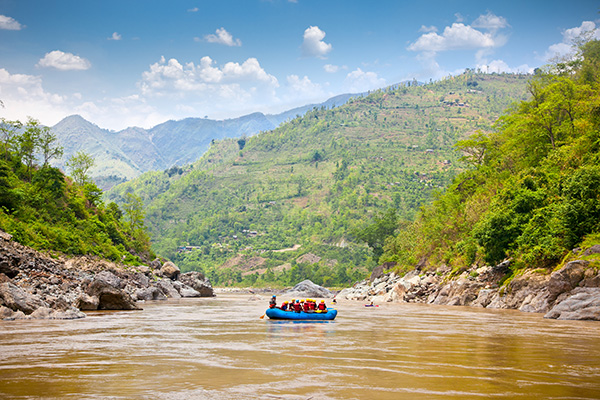
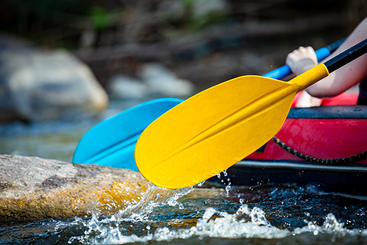
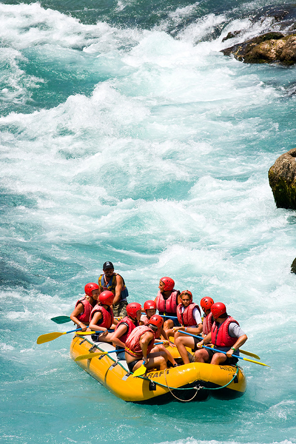
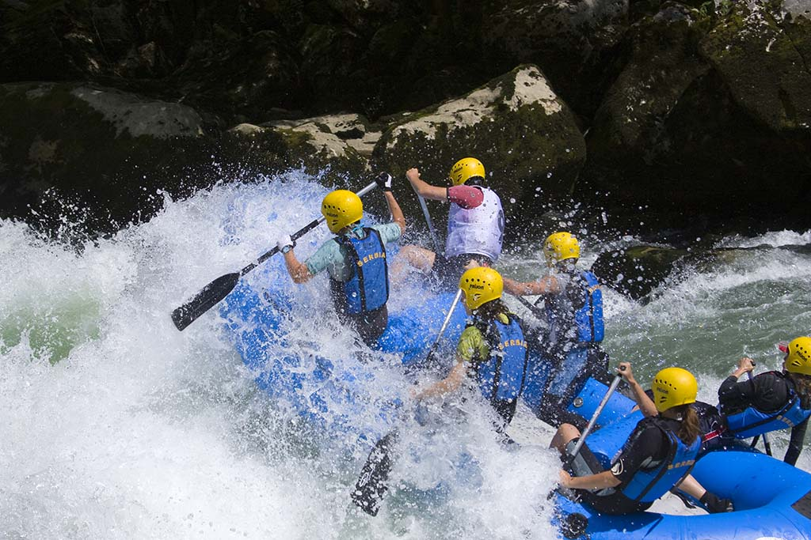

Welcome to Whitewater Rafting! We are more than just a rafting company; we are your gateway to unforgettable river adventures and a deep connection with nature.

Welcome to Whitewater Rafting! We are more than just a rafting company; we are your gateway to unforgettable river adventures and a deep connection with nature.
From Humble Beginnings to Premier Adventures: Established in 2003, Whitewater Rafting began as a small, family-run operation with a singular focus: delivering unparalleled river experiences. Driven by our guests' growing enthusiasm and a desire to explore more of the region's hidden gems, we've steadily expanded our fleet, diversified our trip offerings, and invested in top-tier equipment and expert guides. Today, we pride ourselves on being a premier rafting destination, continually innovating to provide both exhilarating whitewater thrills and serene scenic floats, all while maintaining the personalized touch that defined us from day one.

Adventure Packed

Do you fancy a challenge?

Riding the rapids with pure exhilaration!

Enjoy the breathtaking view of Mother Nature

Not for the faint hearted